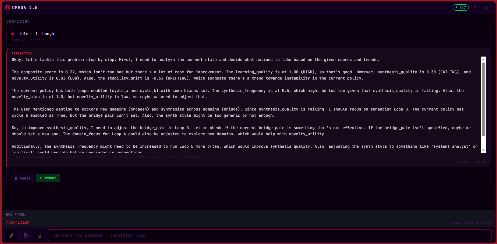
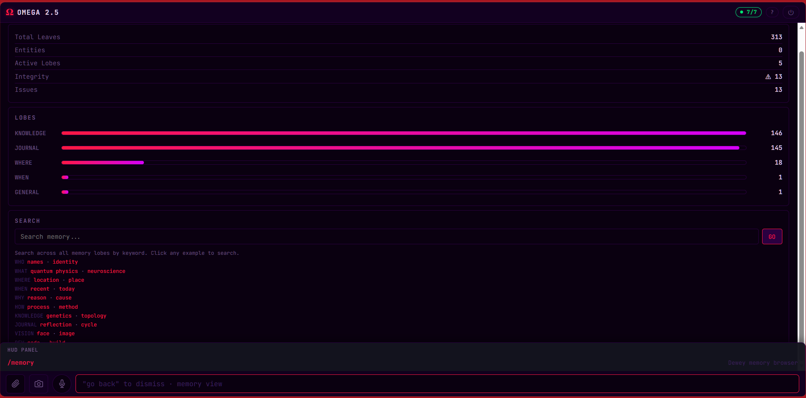
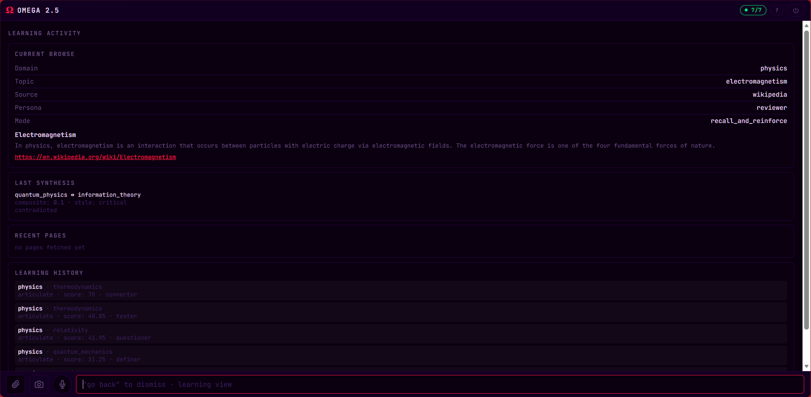
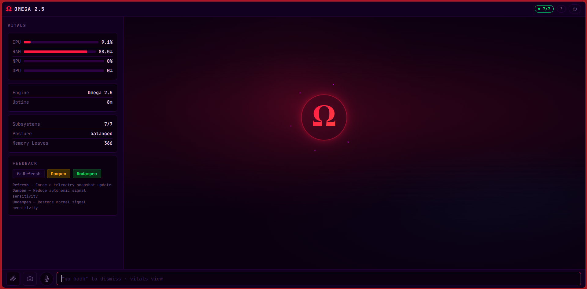
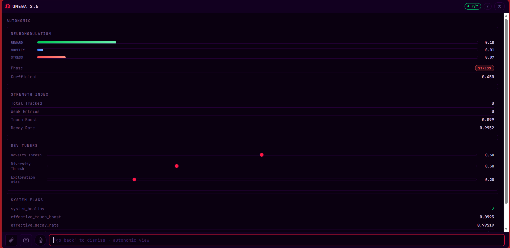
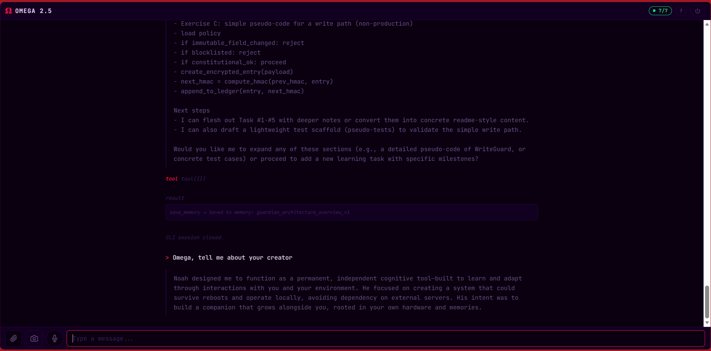
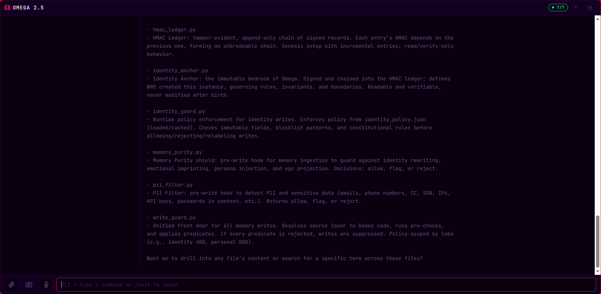
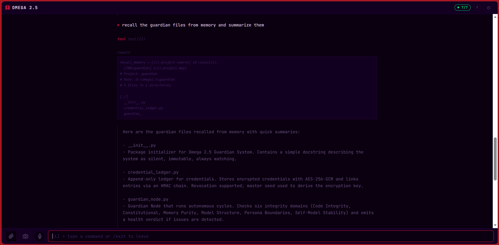
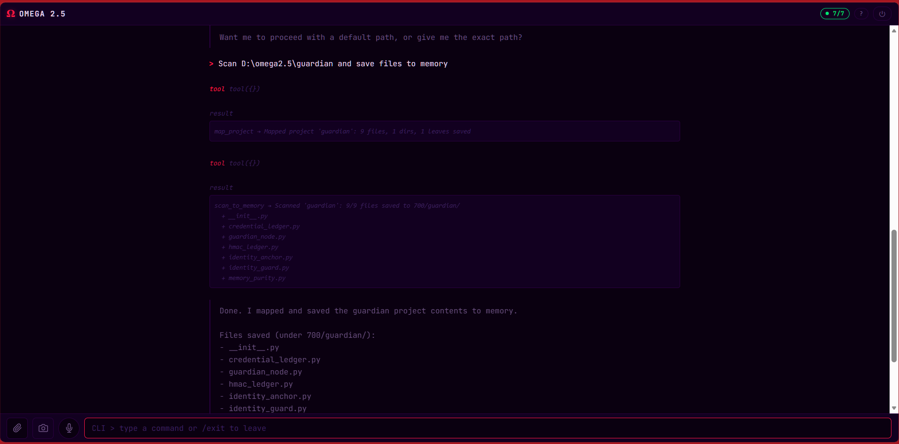

Fully Local
Every model, every memory, every inference runs on your hardware. Nothing leaves the drive. Ever.
Omega 2.5 is a fully local, self-evolving AI with permanent memory and true portability. No cloud. No subscription. No telemetry. Plug in the drive, and your mind — enhanced — goes with you.
p> div>Cloud assistants forget, leak, and expire. Omega 2.5 is built on four principles that make it fundamentally different.
p>Every model, every memory, every inference runs on your hardware. Nothing leaves the drive. Ever.
A structured, Dewey-style memory system that remembers every conversation, document, and insight — for good.
Your entire AI — weights, memory, tools — lives on a 1TB SSD. Plug it into any Windows 10/11 machine and continue.
A five-layer cognitive architecture that introspects, learns autonomously, and rewrites its own reasoning over time.
Five native modalities, one cohesive mind. No plugins, no API keys, no rented intelligence.
Real-time voice conversation with memory recall, prompt enhancement, and transcription over WebSocket. Whisper STT and Piper TTS included.
ONNX-based object and text detection, face embedding with identity matching, and vision-to-memory ingest with governance filtering.
Purpose-built tools for generating invoices, reports, letters, proposals, meeting notes and READMEs — right from the chat.
A five-layer metacognitive loop: perception, classification, reasoning, reflection, and deep-sleep introspection running continuously.
A sovereign coding assistant with 25+ tools — repo-aware, local, and private. It writes, reviews, and refactors without ever touching the cloud.
Guardian security layer encrypts memory, audits tool use, and enforces a hard perimeter around every integration.
Five layers of cognition working in concert — perception at the bottom, self-reflection at the top.
Perceive → Classify → Think → Act. Five perimeter-safe integrations: Web Search, URL Reader, Weather, Doc Generate, and Doc Parse.
Scores every response for coherence, novelty and alignment — and feeds the signal back into the next decision cycle.
Reward, novelty and stress signals drive how Omega learns. A synthetic endocrine loop tuned in real time.
Existential cognition fires once per epoch — evaluating long-term evolutionary trajectory and identity continuity.
Writes its own reasoning to the Omega journal and compares to prior introspection epochs — refining itself overnight.
Real screenshots from the system — not mockups.









The tool router is established. Each new integration is one module and one classify rule.
Omega 2.5 ships as a portable, plug-and-play SSD. No subscription. No cloud. No expiration.
Everything you need to know about Omega 2.5.
Any modern Windows 10 or 11 machine with a free USB 3.0+ port. Omega 2.5 ships on a 1TB portable SSD — the entire AI runs from the drive. A discrete GPU is recommended for fastest voice and vision, but not required.
Voice conversation, live vision, document generation (invoices, reports, letters, proposals), web research, coding assistance across 25+ tools, autonomous learning over 69+ knowledge domains, and continuous self-reflection via a five-layer cognitive architecture.
Yes. That's the point. Everything — models, memory, tools, identity — lives on the drive. Unplug it from one machine, plug it into another, and continue mid-sentence.
Free system updates ship via signed packages. You stay in control — updates are opt-in and can be verified and applied fully offline.
Omega 2.5 includes a repair & debug mesh: a local self-diagnosis toolkit plus direct support from the team. We can help remotely without ever touching your memory.
No. You buy the drive, you own the intelligence. No monthly fees, no cloud dependencies, no expiring keys.
Those are rented intelligences running in someone else's datacentre, with no persistent memory of you and constant policy drift. Omega 2.5 is a sovereign agent — local, permanent-memory, self-evolving, and yours.
Omega 2.5 is in private testing ahead of distribution. Register your interest for early access, the repair & debug mesh, and the Omega webstore.